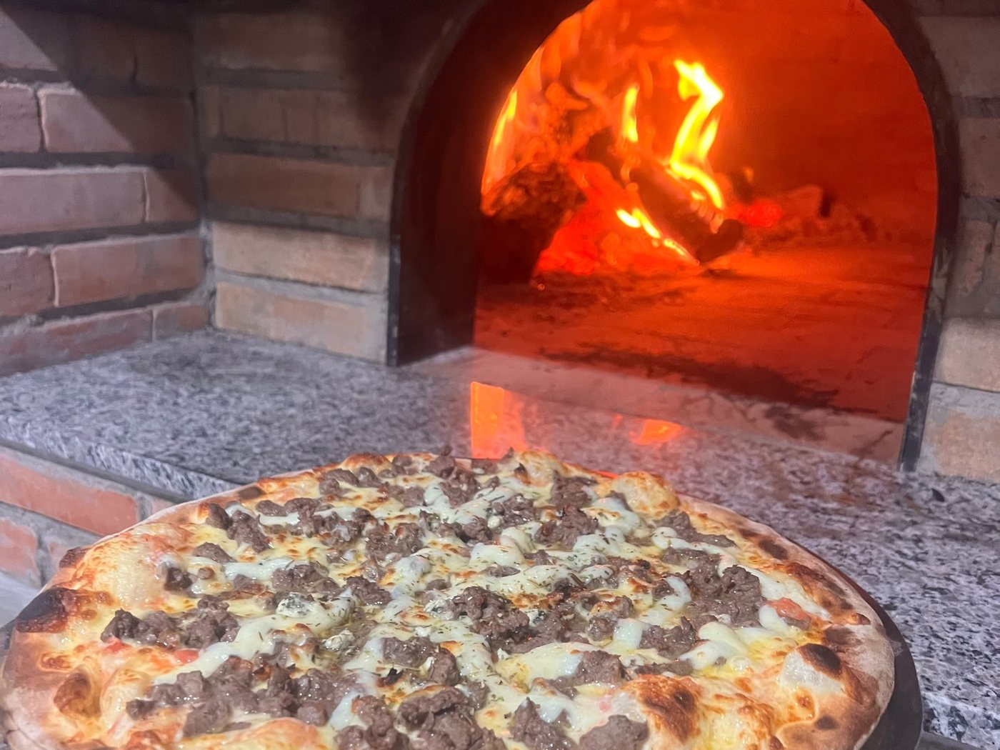

A massa descansa
Farinha, água, sal e fermento. Depois, dois dias de geladeira. É o tempo que deixa a pizza leve.
A história
A Pizza 38 não começou com uma pizzaria. Começou com Xexeu Antunes, dezessete anos, e a primeira pizza da vida em São Paulo.
1988 · Bahia e São Paulo
Campo Alegre de Lourdes fica a dez horas de Salvador. Como muita gente do sertão, Xexeu saiu cedo atrás de trabalho — e foi parar em São Paulo, onde um irmão já estava numa pizzaria.
Foi ali que comeu a primeira pizza da vida, com a primeira Coca-Cola, aos dezessete anos. Era 1988 — e ele já tinha achado o que ia fazer pelos próximos trinta e oito.

Do álbum da casa
O forno é o mesmo destes retratos. Mudou a câmera, mudou a cidade — a massa continua sendo aberta à mão.



1997 · 1999 · 2008
Veio para Garopaba em 1997, para trabalhar numa pizzaria — a primeira vez na cidade. Dois anos depois foi para Porto Alegre, passou por duas casas e, segundo ele, foi ali que aprendeu de verdade o ofício.
Depois seguiu sozinho: criou as próprias pizzas e a própria massa. Em 2008 ganhou um concurso estadual e foi eleito a melhor pizza do Rio Grande do Sul. Sobre o prêmio, ele só diz que a ficha demorou a cair.

Hoje
Xexeu Antunes, pizzaiolo e proprietário
Durante anos eu chegava e abria a porta de uma pizzaria para trabalhar, e não era minha. Hoje eu chego aqui, abro a porta, e a pizzaria é minha.
Xexeu diz que nunca planejou nada disso. Foi trabalhar. Quando fala do que veio depois, usa duas palavras: gratificante e gratidão.
A receita
Me perguntam qual é a receita da massa.
É amor.
Desde que começou, faz com vontade e com prazer — e diz que o resto é respeito por quem come. É o que explica a massa que descansa dois dias e a lenha que acende antes de todo mundo chegar.
A linha do tempo
A primeira pizza, em São Paulo, aos dezessete anos — com um irmão já dentro de uma pizzaria. Nunca mais parou.
Garopaba pela primeira vez, para trabalhar numa pizzaria da cidade.
Porto Alegre. Duas casas, o ofício aprendido de verdade — e, depois, a própria massa e as próprias pizzas.
Eleito a melhor pizza do Rio Grande do Sul num concurso estadual.
Xexeu volta para Garopaba, a cidade onde tinha trabalhado em 97 — desta vez para tocar a própria casa. É a Pizza 38.
A mesma massa de fermentação lenta, o mesmo forno a lenha, uma pizza de cada vez — e uma cidade inteira que já sabe o caminho.
O que não muda
Farinha, água, sal e fermento. Depois, dois dias de geladeira. É o tempo que deixa a pizza leve.
O forno precisa de horas para chegar na temperatura certa. Quem abre a casa acende o fogo primeiro.
Pizza de forno a lenha assa em poucos minutos e não espera. Sai do forno, vai para a mesa ou para a caixa.